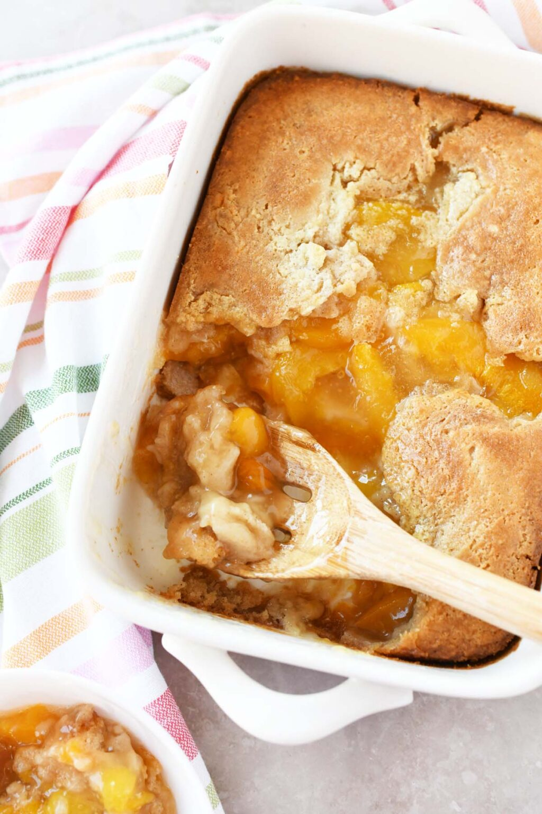

Peach Cobbler

Description
Turn canned peaches into a most excellent summer treat!
Best served with ice cream.
Ingredients
- 3/4 cup self-rising flour
- 3/4 cup milk
- 2 cans sliced peaches in syrup
- 1 cup sugar
- 3/4 stick butter or margarine
Steps
- Preheat oven to 350 degrees. Place the butter in a casserole dish and let it melt in the oven while preheating.
- In a bowl, combine flour, sugar and milk into batter.
- Pour the batter into the middle of the melted butter. Do not stir.
- Pour peaches into the middle of the batter, syrup and all. Do not stir.
- Bake 1 hour. The top should be a golden crust and the edges bubbly.
Home